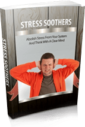

A 2000-Year-Old Nepalese
Trick to A Sciatica-Free Life
Cure Sciatica PERMANENTLY in
I’ve been there…
The feeling of pinpricks in my heels, the shockwaves firing into my nerves, from feet to butt and everything in between…
The debilitating pains of sciatica controlled my life. It just loved to knock me off my feet, and force me to sit down at the most opportune times it could find.
Do you or someone you know ever experience sharp shooting
pains from the lower back on down to the feet?
Nearly every family in the US has at least one family member affected by this dreadful illness.
Sciatica is known by some as "needles for the whole family" due to its unfortunate widespread nature.
I was diagnosed three years ago at 41, and ever since have depended on my lovely wife and young son to take me around. My sciatica was so severe that my legs would lock up in fits of excruciating pain. You can imagine the problems this could cause while driving.
Even worse than the sharp, shooting pain itself was
the fact that I was placing a burden on my family.
For crying out loud, I was 41 years young!
…I WANTED to go outside and play catch with my boy without wondering if another fit of sharp pains would shoot up my legs and knock me on my back.
...I WANTED to help my wife unload the groceries, and take care of the heavy lifting, as a man should for his partner.
Instead, I sat by and watched my wife Joanne do the man's work for me. We both knew that I was too high risk of setting off my over-sensitized nerves…
…dropping everything and causing a mess while I lay helplessly and painfully on the floor.
It was just dreadful all around. Sciatica is the most emasculating disease you can imagine.
Thankfully, as with most problems in life, when one starts looking for a solution, answers CAN be found…
Of course like any American in the US, I went straight to the doctor for my health issue. Right away the good doc prescribed some pain medications and told me to get in touch with a chiropractor for adjustments.
I was using a cocktail of analgesics, muscle relaxants and non-steroidal anti-inflammatories…they gave me some minor temporary relief and lots of stomach cramps and diarrhea…great!
At the chiropractor, often the pains flared up right during the session, and more often than not, I’d walk out worse, not better. But I figured it was all worth it, in order to be able to experience the simple joys of life with my family again.
2 years in, my thoughts on the matter changed
I started to give up on the medications and the chiropractor’s tortures which were giving me no improvements. These therapy sessions were long on promises and frankly didn't fix my underlying sharp lower body pains..
A whole new approach
from Nepalese teachings
Lucky for me, my wife is close to a lovely Nepalese elderly woman who happens to have been a healer in her days. One day, my wife brought home her friend Xie to come see me.
Xie had an interesting surprise for me tucked under her arm, a brown package which she opened to reveal a dark fluid glass wrapped under a large dark green leaf. Right away, I knew we were having something special for tea time!
It was indeed a concoction of some type. With a warm, soothing taste and an absolutely tranquilizing feel as it rolled down the back of my throat, I felt a sense of calm and relaxation run through my body from the first sip.
Five minutes later and already my legs lost their horrible stiffness from the hours of fruitless chiropractic ‘adjustments’. Breathtakingly calm, if that makes any sense.
It was the fastest path to deep,
flowing tranquility that I’d ever experienced in my life
No longer did I fear the possibility of another shooting pain. Everything was calm for that very moment. Time stood still. The stars had aligned, and for that brief moment of bliss my sciatica was not even a figment of reality...
Suddenly I woke up after a light shake of the shoulders. Xie looked down at me smiling, and explained what I just taken.
It was a 2,000-Year-Old remedy that her ancestors
used to bring calm and cool to an
an overly energetic body
As she explained to me, it was my overly eager nervous system causing pains throughout my lower extremities. And the calming drink she gave me helped reverse those symptoms through its powerful relaxing agents.
When I told Xie about the adjustments and medications I'd been using for the last two years, her normally calm, gentle demeanor couldn't help but hide a smirk.
"Glen, those therapies only add more negative energies to
an already tightened part of the body."
Xie told me that she had cured many Westerners who had visited her village; and practically all of them had been at the point where they were very fed with trying and failing the clinical Western approach to healthcare.
When they would finally come to her and experienced the secrets of Nepal, they were not only floored by the mental and spiritual benefits of the approach… but also the price.
IT’S TIMES LIKE THESE WHEN ONE HAS TO WONDER IF BIG
MEDICINE AND BIG PHARMA ARE STEERING WESTERN MEDICINE
IN THE WRONG DIRECTION…
MEDICINE AND BIG PHARMA ARE STEERING WESTERN MEDICINE
IN THE WRONG DIRECTION…
What Xie did to me in the next 15 minutes was nothing short of miraculous. Her approach was dead simple, yet the immediate results were jaw dropping. It was as if she had literally reached into my painful nerves and fixed them, much like an electrician replacing faulty wires..
Comparing those 15 minutes to the two years of Western treatments I had been on, it was clear which sciatica treatment worked, and which one was nothing but empty promises.
Xie told me all I had to do was to repeat what she had done for the next few days and the pain would be gone completely by the end of the week. It was an impressive claim, but from what I had already experienced in just 15 minutes I was convinced.
From 2 years of failure
to five days of recovery
I did as she said, and I started to see results, FAST.
Over the next few days, the pain and stiffness seemed to “evaporate” out of my body…
I went from fearful of getting out of my bed, to walking up and down the stairs.
One day I surprised my son by grabbing him from behind with a bat and catcher's mitt.
The proud grin on his face told me everything I needed to hear.
By day five, I knew the time had come for the ultimate test.
I told my family I'd be heading off to the store to handle the grocery shopping – no escorts or helpers needed.
And as I'm writing this, I think you know that the trip all alone went just fine. My wife stood by the fridge with an ear to ear smile as I unloaded the groceries. I was the man of the house once again.
I’m now free of sciatica
I'm free of holding my entire family hostage
with debilitating pain
Forget synthetic drugs and Western therapies
Xie showed me a better path to address the pains,
and slowly let them wither away on their own,
like a dying weed
Hopefully by now, you know that there is the path to solving your own sciatica issues. Even as my own story unfolded, I have to tell you that I was half in disbelief as my pains left my body.
I asked Xie if she’d be happy for me to write all her secrets down to pass them on to others, and she was more than happy to help.
Our hope is that these teachings will eventually help millions of Americans to put a stop to our endless drug culture, and address the underlying issues for sciatica right at home.
Introducing:
Sciatica SOS™
your guide to eliminating the pain
in 7 days or less – GUARANTEED!
In this revolutionary step-by-step guide on how to beat your sciatica pains once and for all, you’ll discover a precise approach to experience long-lasting sciatica relief and freedom.
Here's what you can expect to find in the Sciatica SOS™ manual:
-
The true nature of sciatica. Why it's so common, and what these pains are trying to communicate to your body.
-
A drug-free home solution that relieves pain all naturally. Add the right remedy into your daily diet along with some other choice herbs, and you will find a sense of calm and tranquility that goes beyond your sciatica related issues.
-
Xie’s secrets that dial back the clock on your body's ills. A Nepalese system to rid your joints, muscles, tendons and nerves of tense energies that builds up every time you experience a shooting jolt of pain from your sciatica. Unlike conventional therapies that seek only to strengthen muscles, we seek to actually heal and re-balance the affected area.
Sciatica SOS™ customers reflect on their
Sciatica-Free turnaround experiences
“Thank you so much for this Glen! After 3 months struggling to get a good night’s sleep due to the pain, I was searching online to see if there was something out there that could help as pain killers and NSAIDs just weren’t cutting it. When I ran across your site my first thought was it sounded too good to be true, but gave it a try anyway seeing that you had a money back guarantee in place. I could hardly believe it; literally the next day the pain was gone and I was able to get a proper night’s sleep. You’re a life saver.”
Jane Eddington Minnesota, USA
I am a post lumbar discectomy patient and my sciatica was probably caused by some scar tissue. Your system provided me with incredibly effective relief and with little effort. Thank you so much for this Sir!
Dilawar Riaz, Karachi, Pakistan
I’ve been battling sciatica for close to a decade, after a minor car accident, and I had tried everything the doc threw at me…pills, injections, special mattresses… Your guide was extremely eye opening and within one week of the regimen you gave me I can barely feel any discomfort. You have no idea how much of a relief it is to be finally getting rid of a pain I’ve had to bear for so many years, thank you.
Gerry Sherington, London, UK
Yes it works, as soon as I started using the ********** I could feel an immediate reduction of the pain. I’ll implement the rest of your recommendations and fingers crossed I’ll be free of sciatica once and for all.
John Jones, Sydney, Australia
I can’t thank you enough Glenn. I was a sciatica sufferer for years and had wasted thousands of dollars on all kinds of therapies and medications, from epidural injections to chiropractic treatments. I’d get temporary relief but after a few days the pain would be back. It had gotten to the point where tying my own shoe laces had become a pain-staking 10 minute task. A friend of mine sent me a link to Sciatica SOS on facebook and barely 5 days later the pain was gone completely and I have my mobility back. One month later I am still completely pain-free. This should be a must to anyone with sciatica.
Michael Pierce, Dublin, Ireland
My sciatica started during my second pregnancy and because of that I did not want to use any medications and wanted to avoid any therapies that could potentially hurt my baby. I found out about your system while searching for natural methods to get rid of the sciatic pain and just wanted to drop you a quick email to let you know that your system has worked wonderfully for me. The inflammation and pain were gone in just a few days and I have the peace of mind of knowing that I did not use any medications. Thanks
Fiona Robertson, New York, USA
ORDER TODAY and you'll also receive
the following 6 BONUSES ($172 Value) FREE !
Bonus #1: Lessons From Miracle Doctors
This e-book is filled with over 180+ pages of powerful information and specific step-by-step strategies you can use right now and everyday to get and stay healthy... it's one of the most comprehensive yet easy to read and understand books on the subject of natural health.
VALUE $37 YOURS FREE
BONUS #2 - Sleeping Solace
Getting proper sleep is crucial for good health and work performance. If you're struggling to get the sleep you need, for whatever reason, then very soon you will no doubt notice a direct impact on the quality of your life.
If this dangerous cycle describes your current situation, then "Sleeping Solace" may be just the answer that you need. Learn how what you eat and how you work during the day can affect your sleep patterns. Also you'll learn what to do right before you go to sleep and how to set the right environment so you can enjoy a good night's rest.
VALUE $27 YOURS FREE
BONUS #3 - 10 Ways to Fight Off Cancer
Learning About 10 Ways Fight Off Cancer Can Have Amazing Benefits For Your Life! The Best Tips On How To Keep This Killer At Bay.
VALUE $17 YOURS FREE

BONUS #4 - Stress Soothers
With this ultimate guide to achieving peace and calmness, you'll be equipped with the most powerful tools and strategies to helping you reduce stress. You will also be exposed to plenty of highly effective methods for identifying triggers and preventing them.
You'll also get tons of extra information on your conditions and how you can deal with them in a variety of ways to achieve peace and calmness in stress using natural methods.
VALUE $27 YOURS FREE
BONUS#5 - How To Lose 10 Pounds Naturally
How To Lose 10 Pounds Naturally" is a must have report that outlines 'everyday ways' to maintain a healthier lifestyle for people on the go. It is designed to be quick and efficient.
VALUE $27 YOURS FREE

BONUS #6 - Free Lifetime Updates
This program is the ONLY proven home method to eliminating sciatica rapidly and permanently. Yet I am still constantly researching and perfecting it. If at any time in the future, I release a new version of Sciatica SOS™, you get it for FREE! And you don't have to do anything from your part - I will simply email you that latest version, so you can keep at the forefront of anti-sciatica research
VALUE $37 YOURS FREE
Fix your sciatica for good for a fraction of the
price of a doctor's visit
Sciatica SOS™ is the only guide to show you exactly how to cure your sciatica naturally and permanently. You may be asking how much such a life-changing system is going to cost you? First, let me ask you - how much are you willing to pay to get rid of your sciatica and constant pain FOREVER?
Now, keep in mind that just a visit to your specialist costs $150 to $200+. If you opt for chiropractic adjustments, these will easily cost you hundreds of dollars over a course of treatment…
But Sciatica SOS™ will cost you NOWHERE near that! You see, I want to give you this life-changing ebook for just $37!
This a fraction of the cost of a single doctor's visit -- and let's not even talk about the cost of the pills and therapy visits you're likely to incur.
Remember, you are not only getting the Sciatica SOS™ e-book and 5 bonus ebooks, but you are also getting free lifetime updates - all for just $37
But don't thank me just yet. I will be putting the price up to $69.99 soon, but first I want to make sure that the people who really need this system have a chance to get it at this ridiculously low price. So don't wait one minute to order at this bargain price!
Once you place your order on Clickbanks's secure server, you will get instant access to this best selling guide, even if it's 3 in the morning. Sciatica SOS™ is in digital format (PDF) which means that there is no need to wait for it to arrive. You will be able to learn the secrets of curing your sciatica, in just minutes from now.

CLICK HERE TO ORDER
ONLY $69.99 (Limited Time Offer -- Now Only $37!)

Say goodbye to your sciatica in 7 days flat
or your full money back!
I am so confident about this system that I personally guarantee that you'll see powerful results in seven days – or your money back. Yes, I am providing a 60-day, 100% full NO-QUESTIONS-ASKED money back guarantee! Put all the risk on me - if your sciatica is not completely gone for good, then simply let me know, and I'll send you a prompt, no questions asked, 100% refund. Refunds are processed by a third party and are paypal-verified, so you can be assured that all refund requests are 100% honoured.
Final note from the author of Sciatica SOS™…
I have a confession: I never intended to write a book on anything, let alone sciatica.
But my first-hand experience of knowing how crippling of a problem this can be led me to a simple truth:
I couldn't sit around knowing that my issue was cured,
while many others continued to suffer
That's why I wrote this book.
That's why I went into great detail to explain the right approach to take to actually make a difference.
That's why I offer it for the low price I do.
Because I want you to have a happy and healthy life that you can share with your family. I'd like you to be sciatica free.
From my family to yours, I wish you a warm and speedy recovery,
Glen Johnson,
Former sciatica sufferer,
Coach and guide on living a sciatica-free life
Even more customers give their feedback on Sciatica SOS™:
Wow your system works like magic! My sciatica started when I lifted 300lbs on the Deadlift for 3 reps about a year ago. The doctor said I had an L4-L5 bulging disc which apparently was ok after 4 months but the pain in my glute down to my ankle was unbearable and I obviously had to stop the gym completely. I tried muscle imbalance therapy, enzymes, creams, catafast, advil, ibuprofen and chiropractic adjustment but nothing seems to work. I downloaded your book last week and immediately got started and I could feel improvement from the very first day. I have now NO pain at all and I plan to re-start gym next week (slowly of course). Thanks buddy!
Ayden Noble, New York, USA
I had a very prolonged episode of sciatica and bought your book as a last resort as I had tried literally everything. I must say that 3 days after starting your treatment I am very impressed as the pain is gone from my leg and I can now only feel it in the right buttock. I will continue the treatment and hope to have it gone completely soon. I will be recommend your guide to my colleagues (nurses) who also suffer from chronic sciatica.
Mariah Silva, Madrid, Spain
Your system is a God-send Mr. Johnson! I bought this for my 78 year old mother, who had been suffering from sciatica on-and-off for over 6 years. Each time she'd see the doc, he d give her a course of anti-inflammatories (usually Celebrex or Catafast). This would make her feel better for a few weeks, but then the pain would be back...
I was worried about the side effects of these medications, and that's when I found your system. It was extremely easy to follow and the instructions were laid out in a very simple manner. My mum had no problem following it at all, and
barely a week later she had no pain!!! She has now been pain-free for 5 months already, God bless you and your family!
Rebecca Cooper, Dubai, UAE
I had a VERY BAD case of sciatica and in fact underwent two operations (one on my back and a hip replacement) but nothing helped the pain. Sitting down was actually the worse for me as the pain was unbearable, while when I stood up it was a bit better. It was getting very tiring and frustrating, and at 42 I was feeling like I was 80 years old!
I read about Sciatica SOS on a forum and purchased based on the person’s high recommendation of it. I must say that they were absolutely right as just one week later the pain is practically gone. THANK YOU THANK YOU THANK YOU!
James Walden, Ontario, Canada
I had been suffering from sciatica for over 20 years but because I can’t afford insurance I could not go to the doctor or chiropractor. I was particularly bad last month and my husband found about your book while searching for help online. After using the Sciatica SOS system for just a week I was able to walk without any pain and now it is gone completely. God bless you!
Jennifer Hall, Texas, USA
P.S. If you have any questions you'd like answered before you order, feel free to contact me at any time. I understand that you may have some skepticism and questions regarding my system, so please do get in touch and I'll be happy to discuss Sciatica SOS™ with you.
P.P.S. Remember, that this offer is backed with a no-questions-asked, full 60 days money back guarantee…you have nothing to lose except your debilitating sciatica!
CLICK HERE TO ORDER
ONLY $69.99 (Limited Time Offer -- Now Only $37!)